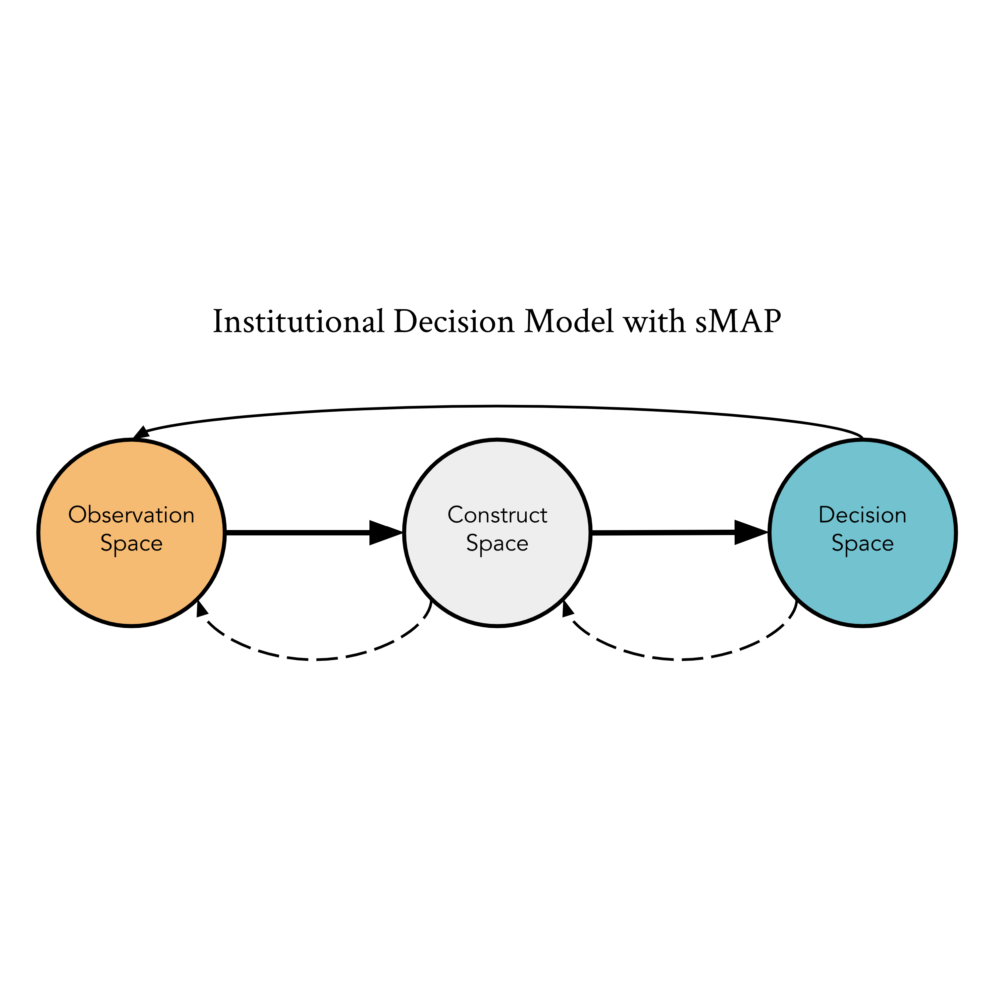

{kind=link}
McKane Andrus
I'm a M.S. student in Computer Science at UC Berkeley advised by Prof. Anca Dragan and part of the Berkeley Artificial Intelligence Laboratory (BAIR) . With a background in AI and Science and Technology Studies (STS), I largely study questions at the intersection of AI, society, and research methodologies.
My main project right now deals with how artificial agents can learn about human capabilities given activity demonstrations and knowledge of the activity goal.
I'm also deeply interested in how to push AI research in a more socially aligned direction. My collaborators and I are doing work on how to use data and modeling to enact theories of justice, how concepts like security and safety become ingrained in the pedagogy and professionalization of different disciplines, and how to actually define, scope, and engage with research problems that are aligned with potentially impacted communities.
Publications
|

|
Towards a Just Theory of Measurement: A Principled Social Measurement Assurance Program for Machine Learning |
|
|
Legible Normativity for AI Alignment: The Value of Silly Rules |
|
|
On Serving Two Masters: Directing Critical Technical Practice towards Human-Compatibility in AI |
© 2019 McKane Andrus